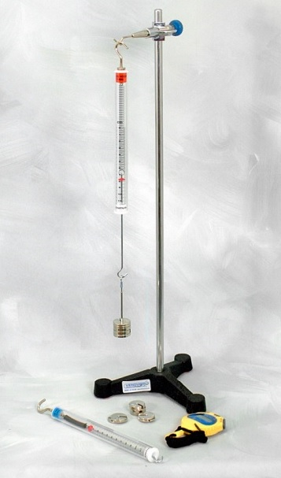

Estudiar la relación existente entre la masa de un sistema que oscila conectada a un muelle y su periodo. Calcular la constante del muelle.
Como ya hemos visto en Ley de Hooke I, cuando un muelle se deforma este genera una fuerza que se opone a la deformación y cuyo valor viene dado por la ley de Hooke .
Como consecuencia de esta ley, cuando un objeto de masa m se conecta a un muelle y se desplaza ligeramente de su posición de equilibrio, se observa que el sistema comienza a oscilar en torno a dicha posición de equilibrio. Este problema es el típico ejemplo cuya solución se corresponde con un movimiento armónico simple. Para obtener dicha solución deberemos plantear la ecuación diferencial correspondiente a esta ley:
En este caso, representa la distancia entre la partícula y la posición de equilibrio del sistema.
La solución de esta ecuación viene dada por la expresión , donde A representa la amplitud del movimiento, la frecuencia angular y es la fase inicial cuyo valor se obtiene a partir de las condiciones iniciales de nuestro movimiento.
En este experimento, vamos a estudiar el movimiento armónico que describe nuestro sistema, para lo cual haremos uso de la relación que existe entre la masa del oscilador, m, la frecuencia angular, y la constante de recuperación del muelle, k, y cuya expresión viene dada por la siguiente ecuación:
,
De este modo el periodo de oscilación vendrá dado por:

Montaje ExperimentalMontaje Experimental
Realizar el montaje mostrado en la figura anterior. Para ello roscar la varilla en la base soporte y fijar la nuez con gancho en la varilla vertical. Colgar de la nuez el dispositivo del que dispone el alumno en su puesto de trabajo. Antes de colgar ningún peso asegurarse que el índice rojo marque el 0 de la escala. Si no fuera así, aflojar la tuerca moleteada superior y enroscar o desenroscar el gancho superior hasta hacerlo coincidir. Una vez hecho esto volver a apretar la tuerca moleteada
Lo primero que debemos hacer es colgar del gancho el muelle que tendremos disponible en nuestro puesto de trabajo asegurándonos de que está ajustado a cero.
El portapesas, cuya masa se mide con una báscula, se usará como una pesa más.
Vamos a realizar medidas del periodo de oscilación en función de la masa que colgamos del muelle. Para ello, iremos añadiendo al portapesas, una a una, 8 pesas de 10 g. En cada paso deberemos medir con la ayuda de una báscula la masa total que cuelga del muelle (pesas + portapesas). A continuación, desplazaremos ligeramente el muelle de su posición de equilibrio y mediremos con ayuda de un cronómetro manual el tiempo que tarda el sistema en realizar 30 oscilaciones, t30 (cada oscilación se entiende como un periodo, es decir, hay que contar una oscilación cada vez que el muelle se encuentra en una posición extrema, superior o inferior). Dicha medida se repetirá tres veces para cada masa para luego calcular la media y con ella el periodo, que será T = t30/30. Una vez obtenido el periodo T, calculamos y su error.
| Masa | t30 | ||||||||
| Color Muelle: |